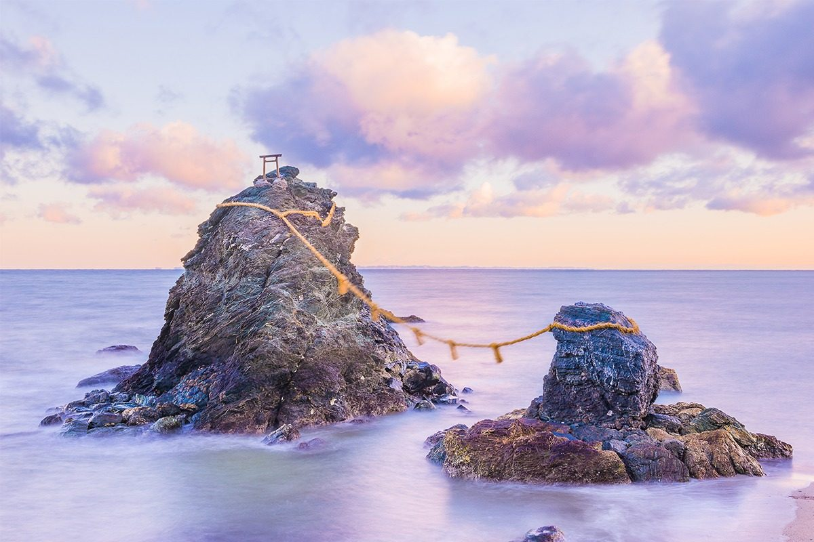
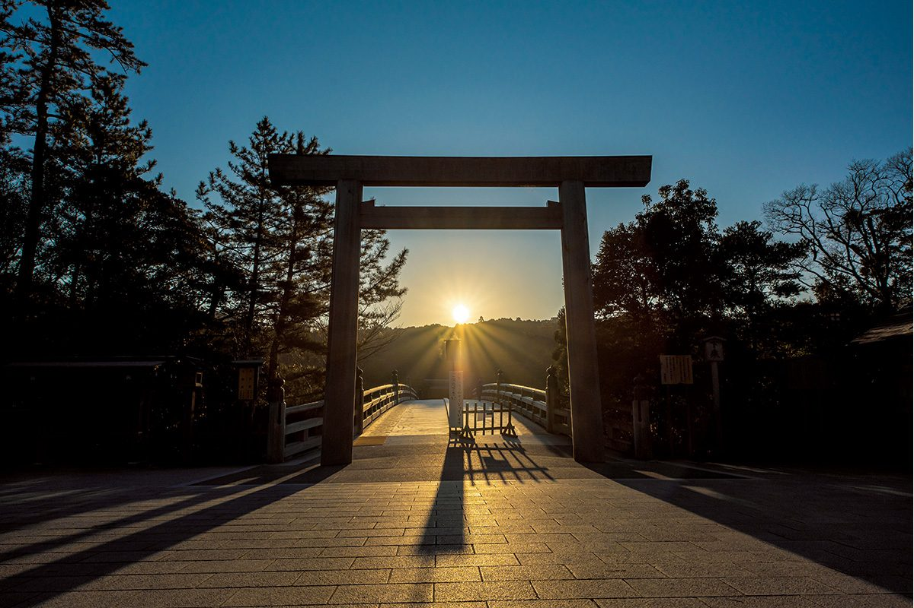
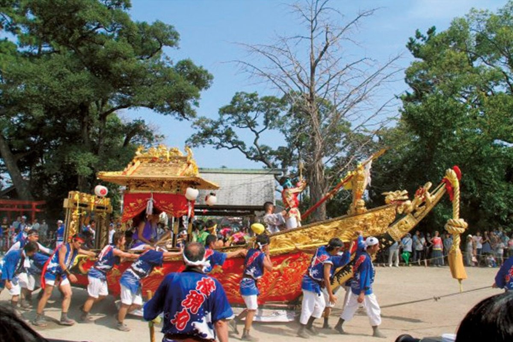
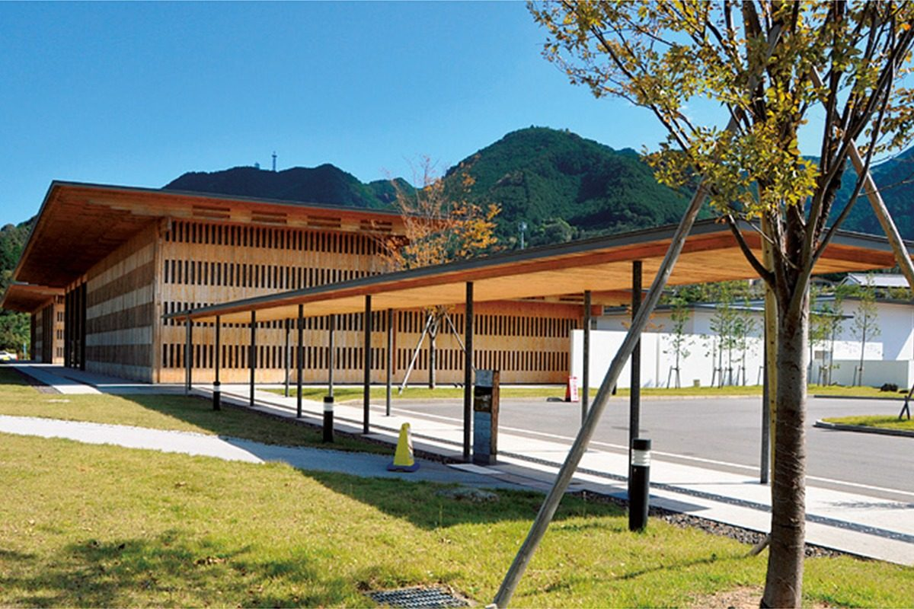
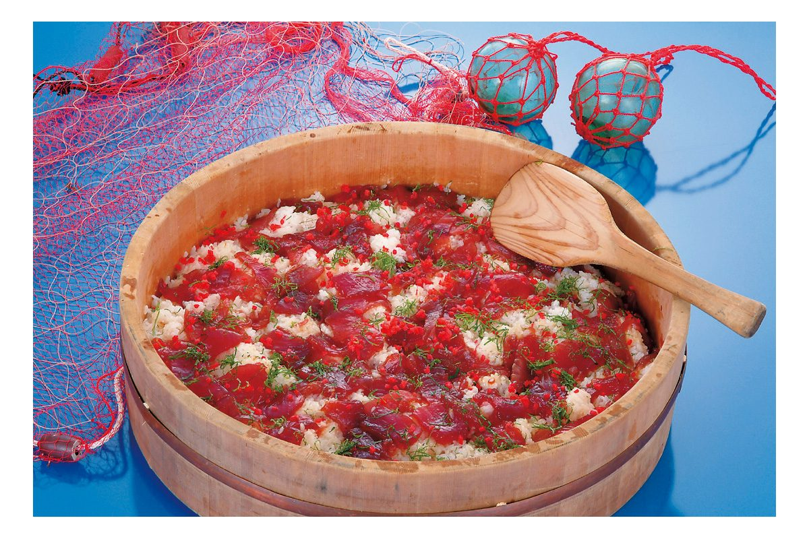
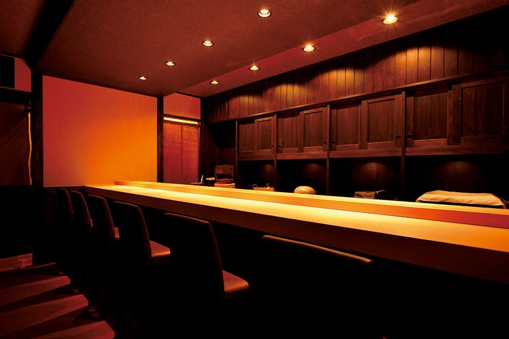
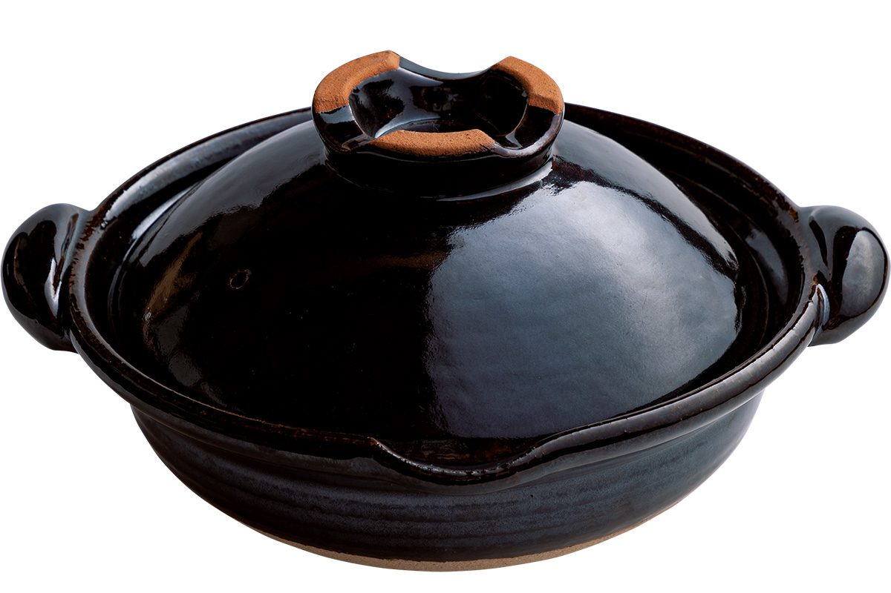

Префектура Миэ
Миэ: к богине солнца по древним паломническим тропам

Скалы Мэото-ива в Футами, «супружеские скалы», связанные священным канатом симэнава
Святилище, куда японцы ходят на поклон уже много веков, жемчужные фермы в тёплых бухтах, суши, которые рыбаки мешают руками, и гончары, чьи горшки берут лучшие рестораны страны. Рассказываем, за чем ехать в Миэ.
Карта: 97 мест из 27 статей · все статьи о префектуре Миэ
Карта
Миэ на карте
97 мест из наших статей о префектуре Миэ: святилище Исэ и улица Окагэ-ёкотё, отели Исэ-Сима, острова у Тобы, тропа Кумано-кодо, донабэ из Иги, Кувана, онсэны Юнояма и Сакакибара. Нажмите на точку, чтобы открыть статью.
Пунктирный круг означает, что точка примерная: место находится в этом районе или на этом острове.
О префектуре
Земля, куда веками шли на поклон к Аматэрасу
Миэ вытянулась с севера на юг примерно на 170 км, а с запада на восток всего на 80 км и граничит сразу с шестью префектурами. Её южный берег изрезан бухтами: это так называемое риасовое побережье, где море затопило бывшие речные долины, и получилось что-то вроде тёплых японских фьордов. Префектуру традиционно делят на пять районов: Хокусэй, Ига, Тюнансэй, Исэ-Сима и Хигаси-Кисю.
Здесь работают заводы крупных корпораций, но при этом просторная территория и мягкий климат позволяют процветать сельскому хозяйству, животноводству и рыболовству. Главная гордость Миэ, известная на весь мир, это выращенный жемчуг. Даже на гербе префектуры энергичная стилизованная буква «ми» из японской азбуки символизирует жемчужные фермы. Власти Миэ ведут собственный знак качества «Бренд Миэ»: кроме жемчуга его получили чай Исэ, мраморная говядина Мацусака (одна из трёх самых знаменитых в Японии), лангусты исэ-эби, устрицы из бухты Матоя и керамика Ига.
Но прежде всего Миэ знаменита паломничеством в Исэ. В 2019 году святилище посетили император и императрица: после восшествия на престол новый император лично сообщает здесь о своём вступлении на трон богине Аматэрасу, прародительнице императорского рода. А ещё в префектуре хватает старинной архитектуры, морских и горных пейзажей и даже парков развлечений.
Что посмотреть
Святилище, которое японцы ласково зовут «О-Исэ-сан»
Исэ-дзингу
Главное святилище синтоизма (традиционной японской религии) на самом деле не один храм, а целый комплекс из 125 святилищ. В его центре два главных: Внутреннее святилище Найку, посвящённое богине солнца Аматэрасу, и Внешнее святилище Гэку, где почитают богиню Тоёукэ, покровительницу пищи и урожая.

- Справки
- Управление святилища Дзингу-ситё
- Адрес
- 1 Ujitachi-cho, Ise, Mie
- Телефон
- +81 596-24-1111
Что ещё посмотреть
- Залив Аго, бухта с десятками островков, где выращивают жемчуг
- Набана-но сато, цветочный парк, знаменитый зимней иллюминацией
- Смотровая площадка Ёкояма с лучшим видом на залив Аго
Праздники
Охота на кита под барабаны
Праздник китобойных лодок в святилище Торидэ
Когда-то здесь молились о богатом улове китов и о защите от бед. Теперь по улицам катят праздничные повозки в виде китобойных лодок, украшенные пышной резьбой и вышивкой, и «загарпунивают» кита, который символизирует изобилие. Главное зрелище праздника это азартная схватка лодки и кита.

- Когда
- 14 и 15 августа
Другие праздники
- Исидори-мацури в Кувана, шествие повозок под грохот барабанов и гонгов
- Праздник Тэндзин в Уэно с процессией повозок-дандзири
- Ниинамэсай в Исэ-дзингу, обряд благодарения богам за новый урожай
Музеи и архитектура
Дом из кипариса у начала священных троп
Центр Кумано-кодо
Кумано-кодо это сеть древних паломнических дорог на полуострове Кии, сегодня внесённая в список Всемирного наследия ЮНЕСКО. В визитном центре можно прочувствовать и сами тропы, и природу, и жизнь окрестных мест. Здание построено из местной древесины: кипариса хиноки и криптомерии из Кумано.

- Адрес
- 12-4 Mukai, Owase, Mie
- Телефон
- +81 597-25-2666
Что ещё посмотреть
- Храм Сэндзю-дзи, связанный с монахом Синраном, основателем буддийского течения Дзёдо-синсю
- Рокка-эн, усадьба эпохи Мэйдзи, где западный особняк соседствует с японским домом
- Морской музей о рыбаках, ныряльщицах и морской жизни побережья
Местная кухня
Суши, которые рыбаки мешали руками
Тэконэ-суши
Настоящая еда рыбаков: кусочки тунца или бонито маринуют в соевом соусе и перемешивают с рисом для суши. Название так и переводится, «суши, замешанные руками». Блюдо вошло в список ста лучших региональных блюд, составленный Министерством сельского, лесного и рыбного хозяйства Японии.

Что ещё попробовать
- Исэ-удон, очень толстая и мягкая лапша с густым тёмным соусом
- Санма-суши, суши с маринованной сайрой (подробнее в вопросах ниже)
- Ёккаити-тонтэки, толстый свиной стейк в чесночном соусе
Где поесть
Единственные три звезды Мишлен в префектуре
Кома-да
Хозяин учился своему ремеслу в знаменитых суши-ресторанах Токио и к каждому кусочку добавляет что-то своё. Меню одно: омакасэ, то есть «на усмотрение шефа». Сначала подают закуски, потом переходят к нигири. На 2020 год это был единственный ресторан в Миэ с тремя звёздами Мишлен.

- Адрес
- 2-14-18 Kawasaki, Ise, Mie
- Телефон
- +81 596-28-7747
- Часы
- с 18:00 до 22:00, только по записи
- Выходные
- нерегулярные
- Сайт
- ise-komada.com
Ремёсла
Чёрный горшок, за которым охотятся лучшие повара
Мастерская Дораку-гама
В городе Ига гончарничают со Средних веков, и именно здесь делают керамику Ига. Мастерская Дораку работает тут с эпохи Эдо, то есть примерно с XVII века. Седьмым главой мастерской был мастер, друживший со знаменитой писательницей, знатоком японской эстетики. Сейчас мастерскую возглавляет восьмой глава, Фукумори Дохо, и среди ценителей керамики это имя звучит громко. Особенно славятся чёрные глиняные горшки донабэ, в которых готовят японские блюда-набэ: ими пользуются даже лучшие рёотэи, традиционные рестораны высокой японской кухни.

Керамика Ямагути
Тёплые узоры нанесены жидкой глиной по старинной технике «слип». Здесь делают посуду для каждого дня.
- Мастерская
- Yamaguchi Pottery
- Телефон
- +81 90-8322-3979
- Сайт
- yamapota.com
Что привезти
Сакэ из Ига и сладость с берегов священной реки
Сакэ «Хандзо» дзюммай дайгиндзё «Мигаки 40»
Его варят на пивоварне Ота, где сакэ делает уже седьмое поколение хозяев. Дзюммай дайгиндзё это высшая категория сакэ без добавления спирта, а цифра 40 значит, что от каждого рисового зерна оставили лишь 40%. Яркий аромат, насыщенный и глубокий вкус.
- Цена
- 5500 иен за 720 мл
- Телефон
- +81 595-21-4709
- Сайт
- hanzo-sake.com
Акафуку-моти
Рисовые лепёшки моти, покрытые нежной пастой из красной фасоли. Бороздки на пасте повторяют журчащие струи реки Исудзу, которая течёт у Внутреннего святилища Исэ.
- Цена
- 760 иен за коробку из 8 штук
- Телефон
- +81 596-22-7000
- Сайт
- akafuku.co.jp
Где остановиться
Отель, где проходил саммит G7
Отель «Сима Канко Классик»
Роскошный курортный отель на острове Касикодзима в заливе Аго. Здесь останавливались члены императорской семьи и множество высоких гостей, а в 2016 году отель принимал саммит «Большой семёрки» в Исэ-Сима.
- Адрес
- 731 Ago-cho Shinmei, Shima, Mie
- Телефон
- +81 599-43-1211
- Номеров
- 114
- Цена
- от 34 990 иен за ночь с завтраком и ужином, налоги и сбор включены
Местный диалект
Как говорят в Миэ
- Мэття оисии ян!Ну очень же вкусно!
- Кампинтан я!Совсем высохло!
- Сато га тоготторуСахар осел на дно
- Хоттэ курэян?Выбросишь, а?
Рекорды
Где Миэ первая в Японии
- №1 по улову лангустов исэ-эби
- №1 по производству свечей
- №1 по числу ама, ныряльщиц, которые без акваланга добывают со дна морских ушек и моллюсков
Вопросы и ответы
Проверьте себя
Какую керамику в эпоху Момояма ценили для чайной церемонии?
Керамику Ига. В эпохи Муромати и Момояма (с XIV по XVI век), когда расцвела чайная церемония, её стали высоко ценить как чайную утварь. Изделия того времени называют «ко-ига», то есть «старая Ига», и их не раз называли одной из вершин японской культуры.
Какие суши едят по праздникам на юге префектуры?
Санма-суши. На побережье моря Кумано их готовят из маринованной в уксусе сайры к праздникам и торжествам. Местное общество хранителей санма-суши в городе Кумано даже учредило «День санма-суши», он отмечается 10 января.
Справочник
Миэ в цифрах
Общие данные
| Административный центр | Цу |
| Муниципалитеты | 14 городов, 15 посёлков |
| Площадь | 5774 км² |
| Население | 1,79 млн человек |
| Плотность населения | 310,2 чел./км² |
| Туристов в год | 42,2 млн |
| Символ-дерево | криптомерия Исэ-дзингу |
| Символ-цветок | японский ирис ханасёбу |
| Символ-птица | морской зуёк |
Климат
| Средняя годовая температура | 16,9 °C |
| Средний максимум | 33,2 °C |
| Средний минимум | 1,2 °C |
| Осадки | 1720 мм в год |
| Ясных дней | 45 |
| Дней с осадками | 108 |
| Дней со снегом | 20 |
Для путешественника
| Горячих источников | 71 |
| Отелей и рёканов | 1458 |
| Художественных музеев | 8 |
| Музеев | 94 |
| Придорожных станций митиноэки | 18 |
| Объектов культурного наследия | 188, из них 6 национальных сокровищ |
| Национальные сокровища | рукописи «Сайхо синансё» и «Сантё васан», залы Миэйдо и Нёрайдо храма Сэндзю-дзи и другие |
| Исторических памятников | 37 |
| Живописных мест | 8 |
| Памятников природы | 39 |
| Всемирное наследие | Священные места и паломнические маршруты в горах Кии |
| Национальные и квазинациональные парки | Исэ-Сима, Ёсино-Кумано, Судзука и другие, всего 4 |
Природные памятники
Хризантема исэгику, порода собак кисю-кэн, ущелье Осугидани и другие.
Наши статьи
Все статьи о префектуре Миэ
Святилище Исэ
- Святилище Исэ: путеводитель по главному святилищу Японии, от мифа до поклона
- Святилище Исэ изнутри: как устроены его здания, зачем здесь 1500 обрядов в год и где увидеть то, что скрыто за оградой
- Лес святилища Исэ: кипарисы на двести лет вперёд и праздники священного дерева
- О-Исэ-маири: как Япония эпохи Эдо отправлялась в паломничество всей деревней
Город Исэ
- Окагэ-ёкотё: как дом сладостей Акафуку вернул жизнь улице у святилища Исэ
- Город вокруг святилища Исэ: утренняя каша, сакэ и мастера нэцукэ, а на побережье Сима кацуобуси
- Пиво Исэ: чайная 1575 года, дрожжи из леса и пивоварня в старом амбаре
- Крафтовая кола Исэ: имбирь с собственного поля и старинное лекарство паломников
- Виды Исэ и Тобы: горная дорога над заливом и места, которые нашли фотографы
Исэ-Сима и Тоба
- Shima Kanko Hotel: курорт над заливом Аго, где принимали саммит G7
- Toba International Hotel: залив Тоба с террасы, лангусты и рёкан Shiojitei
- NEMU RESORT: лес, море и звёзды на берегу залива Аго
- COVA KAKUDA: виллы над заливом Аго на месте старой жемчужной фермы
- Glamp Ocean Iseshima: ночь в прозрачном куполе у самой воды залива Исэ
- Камисима и Тоси: острова ныряльщиц ама и рыбацкого братства у Тобы
Кумано и Ига
Север: Кувана, Комоно, Судзука, Инабэ
- Кувана: город на Токайдо, где история читается по улицам, мечам и карпу
- Кувана: праздники с конями и колоколами, печёные хамагури и утренний рынок
- Yunoyama Sosuikyo: двенадцать вилл из восьми материалов у онсэна Юнояма
- Сливы Судзуки и Инабэ: плакучие деревья-драконы и долина в цвету у гор
- Сарутахико и Амэ-но Удзумэ: боги, которые указывают путь, и святилища Миэ, где им молятся
- Инабэ у гор Судзука: палатки Nordisk, кемпинг в ущелье, обед с печи и чайная ферма